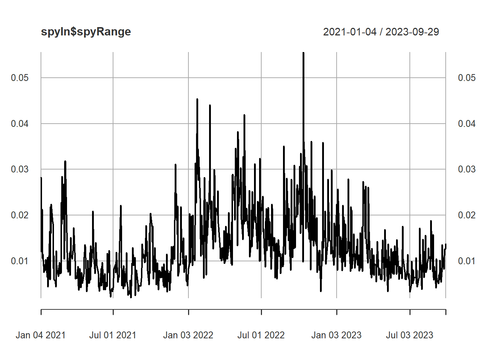
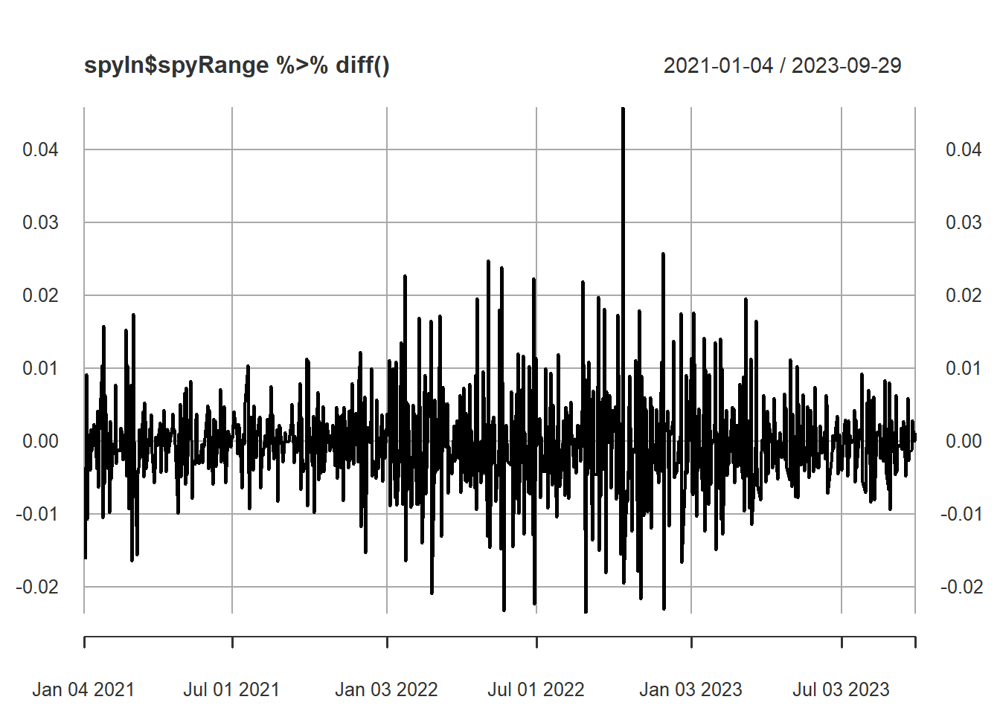
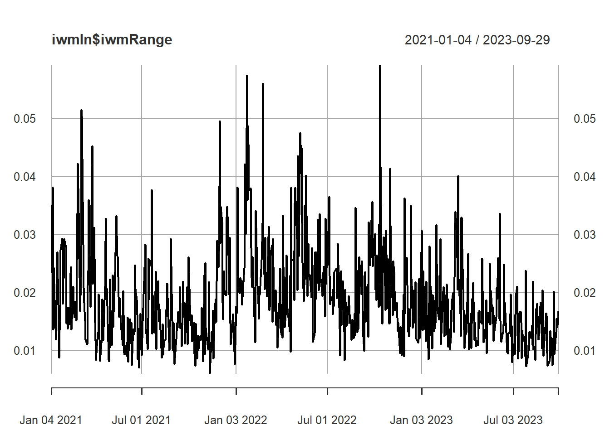
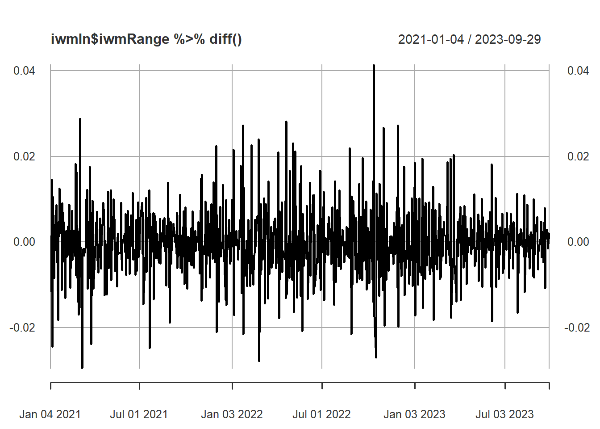
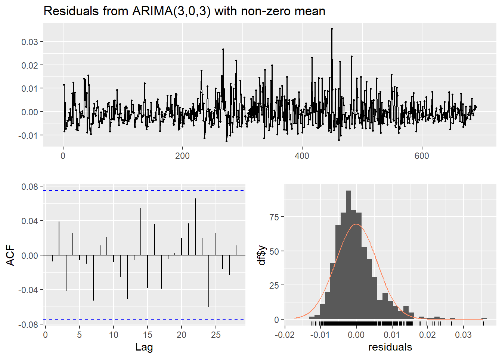
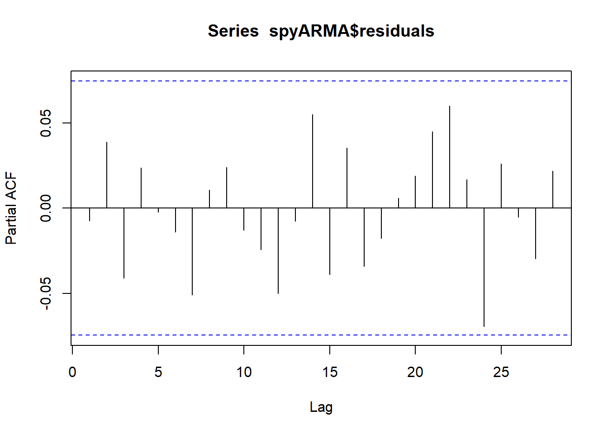
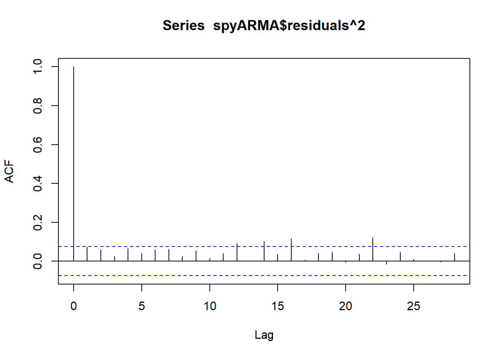
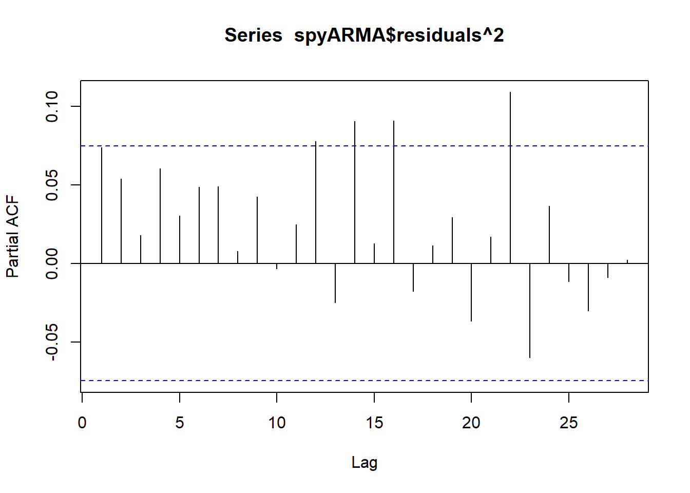

On this page, I will look to see whether ARCH and GARCH models may be a good fit for the change in intraday range of popular stock market indices. While these models would usually be fitted on the returns of financial intstruments, the day over day change in intraday percent range also exhibits volatility clustering, and intraday range is the exact subject of my project. This means that modelling these time series successfully would be complementary with the other models I have tried to fit, and I am eager to investigate whether these methods will work well at answering my research questions. I will look to fit 3 models: 1 each for the daily range of SPY, QQQ, and IWM.
v ggplot2 3.4.4 v purrr 1.0.1
v tibble 3.2.1 v dplyr 1.1.2
v tidyr 1.2.0 v stringr 1.4.0
v readr 2.1.2 v forcats 0.5.1
-- Conflicts ------------------------------------------ tidyverse_conflicts() --
x dplyr::filter() masks stats::filter()
x dplyr::lag() masks stats::lag()
Code
library(forecast)
Registered S3 method overwritten by 'quantmod':
method from
as.zoo.data.frame zoo
Code
library(quantmod)
Loading required package: xts
Loading required package: zoo
Attaching package: 'zoo'
The following objects are masked from 'package:base':
as.Date, as.Date.numeric
######################### Warning from 'xts' package ##########################
# #
# The dplyr lag() function breaks how base R's lag() function is supposed to #
# work, which breaks lag(my_xts). Calls to lag(my_xts) that you type or #
# source() into this session won't work correctly. #
# #
# Use stats::lag() to make sure you're not using dplyr::lag(), or you can add #
# conflictRules('dplyr', exclude = 'lag') to your .Rprofile to stop #
# dplyr from breaking base R's lag() function. #
# #
# Code in packages is not affected. It's protected by R's namespace mechanism #
# Set `options(xts.warn_dplyr_breaks_lag = FALSE)` to suppress this warning. #
# #
###############################################################################
Attaching package: 'xts'
The following objects are masked from 'package:dplyr':
first, last
Loading required package: TTR
Read in data
Code
spyIn <- quantmod::getSymbols("SPY", from =as.Date("2021/01/01"), to =as.Date("2023/09/30"), periodicity ="daily", src ="yahoo", auto.assign =FALSE)qqqIn <- quantmod::getSymbols("QQQ", from =as.Date("2021/01/01"), to =as.Date("2023/09/30"), periodicity ="daily", src ="yahoo", auto.assign =FALSE)iwmIn <- quantmod::getSymbols("IWM", from =as.Date("2021/01/01"), to =as.Date("2023/09/30"), periodicity ="daily", src ="yahoo", auto.assign =FALSE)spyIn$spyRange <- (spyIn$SPY.High - spyIn$SPY.Low)/ spyIn$SPY.OpenqqqIn$qqqRange <- (qqqIn$QQQ.High - qqqIn$QQQ.Low)/ qqqIn$QQQ.OpeniwmIn$iwmRange <- (iwmIn$IWM.High - iwmIn$IWM.Low)/ iwmIn$IWM.Open
Plotting the daily ranges:
SPY
Code
plot(spyIn$spyRange)

The SPY data certainly appears to have clustered volatility, as there are large swings in close proximity to eachother. But it also has noticeable trend, with the intraday ranges being higher during the middle of the time series before dropping down again towards the end. To combat this, let’s look at the differenced series:
Code
plot(spyIn$spyRange %>%diff())

Now, we see a plot that looks very similar to the daily returns of a stock and promising for ARCH/GARCH modeling, which means it is stationary but has clustered volatility. To adjust for this, we can fit an ARIMA model on the SPY ranges, and then fit a GARCH model on the residuals, which will come from differenced data that is now stationary.
Repeating the process for QQQ:
Code
plot(qqqIn$qqqRange)
Once again we see clear non-stationarity in the data, so let’s look at the differenced values:
Code
plot(qqqIn$qqqRange %>%diff())
Similar to the SPY data, the time series is now stationary, although there is heteroskedasticity. So we might expect to model QQQ and SPY similarly, with an ARIMA + ARCH/GARCH model.
Let’s check IWM:
Code
plot(iwmIn$iwmRange)

IWM’s intraday range looks slightly more stationary than the other 2 time series, and also has more extreme changes in volatility over time. However, we can still see somewhat of a trend, such that a moving average would be obviously nonstationary, so once again we difference the series.
Code
plot(iwmIn$iwmRange %>%diff())

While the variance looked elevated in the non-differenced plot, it is actually less hesteroskedastic in the differenced plot. This suggests IWM may not have as much autocorrelation in the variance as the other two indices. An ARIMA model alone might suffice here.
Look at past arima model for the data (fit here and copy to that tab later)
Now, let’s gather ARIMA models for the intraday range. First we declare the helper function
Now, let’s find good-fitting models starting with SPY:
Code
arimaResults(spyIn$spyRange)
p d q AIC BIC AICc
43 3 0 3 -5139.956 -5103.662 -5139.744
The best model returned by the function is ARMA(3,0,3). It is surprising that the models which differenced the data didn’t perform better, but I manually reviewed those options and they all had worse AIC and BIC scores.
For QQQ:
Code
arimaResults(qqqIn$qqqRange)
p d q AIC BIC AICc
15 1 0 1 -4814.81 -4796.663 -4814.751
For QQQ, the model with the lowest AIC score was ARMA(1,0,1). Once again I expected a differenced model to perform better, but I will continue with the residuals from this model.
For IWM:
Code
arimaResults(iwmIn$iwmRange)
p d q AIC BIC AICc
56 4 0 4 -4857.373 -4812.006 -4857.049
Fitting the pattern of the best models for the financial instruments being of the form ARMA(N, 0, N), the model with the lowest AIC for IWM was ARMA(4,0,4).
Reviewing Residuals to Identify ARCH/GARCH Models
Now, lets look at the residuals of all of these models, to identify clustering and see if we need to fit ARCH/GARCH models on the residuals.
Declaring the models
Code
spyARMA <-arima(spyIn$spyRange, order =c(3,0,3))qqqARMA <-arima(spyIn$spyRange, order =c(1,0,1))iwmARMA <-arima(spyIn$spyRange, order =c(4,0,4))
SPY range residuals:
Code
checkresiduals(spyARMA)

Ljung-Box test
data: Residuals from ARIMA(3,0,3) with non-zero mean
Q* = 5.2511, df = 4, p-value = 0.2625
Model df: 6. Total lags used: 10
The residuals show definite clustering around timestamps 260 and 450, which suggests a ARCH/GARCH model will be a good fit. Now lets look at ACF and PACF plots of the residuals and squared residuals:
Code
acf(spyARMA$residuals)
Code
pacf(spyARMA$residuals)

Code
acf(spyARMA$residuals^2)

Code
pacf(spyARMA$residuals^2)

Code
#install.packages('FinTS')library(FinTS)
Attaching package: 'FinTS'
The following object is masked from 'package:forecast':
Acf
Based on the ACF and PACF plots, it seems like an ARCH model of (1) might be the best fit for SPY residual data. An ARCH test of the original range data confirms that there is an ARCH effect in the dataset.